Através do StyledComponents podemos criar uma das principais features dessa biblioteca, que é o createGlobalStyle. Como o próprio nome já diz, é um estilo que pode ser pego dentro de toda a nossa aplicação. Aqui podemos configurar padrões iniciais do css como (margin0, padding0, boxsizing0), fontes, etc. Para utilizarmos, precisamos exportar o estilo global, e envolver nosso projeto por sua camada. Ex: (Exemplo em React Puro)
Outra feature de extrema importância ao trabalhar com StyledComponents, é o fato de podermos utilizar o Theme Provider. Basicamente um arquivo onde iremos setar todas as cores e a nossa paleta da aplicação. Assim podendo ser utilizada em todos os locais. Exemplo:
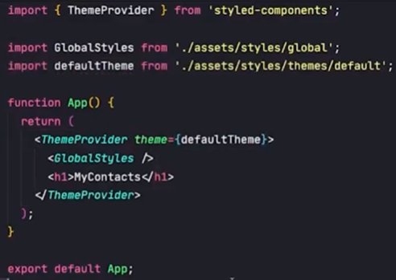E o arquivo do theme, fica:
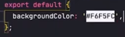Dessa forma em qualquer arquivo STYLEDCOMPONENTS podemos utilizar essas cores pré configuradas no arquivo Theme através das props. Exemplo abaixo:
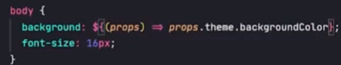Dentro de um componente sendo estilazado, por ex, uma lista de Card. Caso queiramos estilizar os que estão em sequencia, podemos colocar: & + & {} dessa forma todas as propriedades que estiverem ali dentro serão aplicadas apenas quando tiver um em sequencia do outro. Ex: margin top 10px. Se tivermos três cards, será aplicada no segundo em diante.
Outro truque dentro do CSS & React, é o seguinte: Podemos enviar props para dentro de um arquivo styled component. Por exemplo, enviamos um booleano, caso seja true, aplicar determinada estilizacao, caso seja false, aplicar outra. Porém muitas vezes iremos nos deparar com situacoes trabalhosas, por exemplo: Imagine um button, caso seja true, tais estilizacoes e caso seja false, outras estilizacoes. Em um caso como este, teremos que repetir diversas a logica (se danger true, entao )... em todos os button, button:hover, etc etc. Porém existe uma forma de colocarmos a lógica apenas uma vez, e dentro dela tudo o que for necessário. Exemplo abaixo:
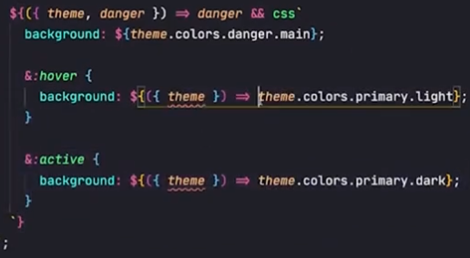Outra coisa que também podemos realizar dentro do StyledComponents é trabalhar com variantes. Por exemplo: Criamos um botao que pode ter 03 valores: Default, Succes ou Danger. Ao invés de criarmos tres estilos diferentes, podemos criar um objeto com cada estilo, e enviar via string (Props) e assim irá bater com o devido estilo selecionado e assim sendo renderizado. Exemplo:
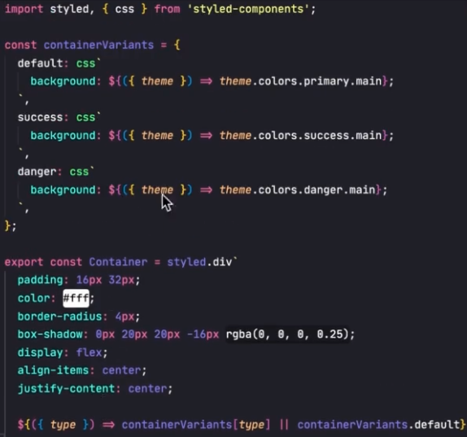Uma das coisas mais comums no dia a dia é nos depararmos com modais em nossos sistemas. Uma das alternativas em fazer modais no react é da seuginte forma: Criamos uma div, que colocamos suas posicoes absolutas, com um background com opacidade, ocupando a tela inteira, e dentro dela uma outra div, com o container do nosso modal. Exemplo abaixo:
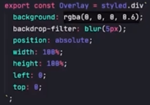Hooks customizados nada mais são do que funções JS criadas em um arquivo a parte. Muito utilizado para evitarmos duplicação de códigos. Imagine que tenhamos por exemplo uma lógica de validar inputs de formulários. Muitas das vezes, podemos simplificar isso em um arquivo separado, utilizando sempre que quisermos em diversos lugares diferentes. Regras:
Inicialmetne criamos uma pasta chamada HOOKS, e dentro dele colocamos nossos custom hooks. Sempre que formos criar um, precisamos começar utilizando a palavra use. Ex: useErrors . Básicamente funciona para abstraçao de lógicas.
Muitas das vezes o usuário precisará digitar o seu número de telefone em inputs. E fica de bom tom aplicarmos uma máscara, para que o input automáticamente aplique a formatação correta: (24) 99999-9999 . Para isso, criamos uma funcao formatPhone dentro de um arquivo, que possui uma regex.Exemplo:
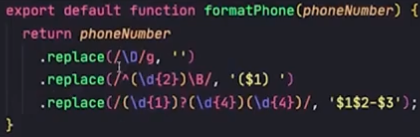E para aplicarmos para quando digitarmos um número dentro de um input ele funcione, no onChange colocamos: (e)=> setPhone( formatPhone(e.target.value) )
Caso seja necessário voltarmos ao padrão antigo para submetermos a um database por exemplo, colocamos:
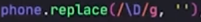Quanto menos tarefas colocarmos dentro de uma page/components é melhor parar a manutenção e construção do código. Nesse caso usaremos o exemplo de requisições. Imagine que dentro de cada componente que utilizar requisições coloquemos seu código ali dentro. (Fetch, Axios, a funcao , async, aawait.). Isso significa que teremos uma repetição de código considerável e que em um futuro que precisemos dar manutenção como por exemplo parar de utilizar fetch e utilizar axios, precisaremos procurar de arquivo em arquivo, alterar código em código. Seria muito mais fácil se todas as requisições ficassem centralizadas em apenas um local. E é para isso que entra a nossa nova Sourcer Layer .
Para isso precisamos criar uma pasta chamada Services, e dentro dela teremos um arquivo para cada entidade da nossa aplicação. Por exemplo, ContactsService, e por ai vai. Dentro do arquivo, poderemos usar o padrão Singleton que consiste em criar uma classe, e exportar uma instância dessa classe. Dentro dela, teremos os métodos necessários para executar cada requisição que a entidade necessite.
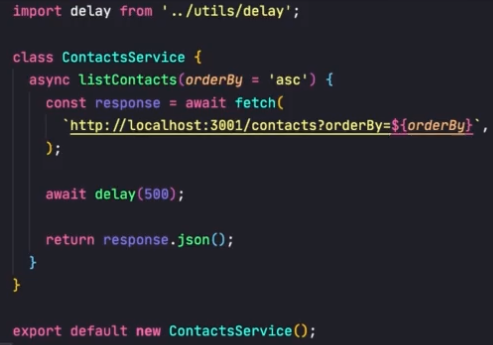Dessa forma, sempre que precisarmos alterar qualquer coisa relacionado a requisições basta irmos até os arquivos da pasta Services.
Até aqui já conseguimos desacoplar bastante as responsabilidades. Porém ainda é possível desacoplarmos ainda mais através de um carinha chamado HTTPCLIENT. Mas o que isso significa? Imagine no cenário acima, que tenhamos um sistema com diversos services e entidades, e que por algum motivo, precisemos parar de utilizar o fetch, e passarmos a utilizar o Axios. Dessa forma, deveremos ir de requisição em requisição alterando cada método dentro da nossa classeService por exemplo. O que geraria um trabalho grande. Mas como podemos otimizar isso? Podemos criar o HTTPCLIENT, que ficará responsável em como as requisições serão executadas(axios, fetch, etc.).
Primeiramente precisamos entender como o JavaScript trata seus errors em sua natureza. Ao encontrar um error, o javascript automáticamente irá parar toda a execução do código da linha na qual o error foi encontrada em diante. Após parar toda a execução ele irá começar a procurar dentro da CallStack atual o primeiro bloco Catch que encontrar e ali o error será tratado. Caso ele não encontre nenhum bloco catch dentro da callstack, ele irá lançar um Uncaught Error. Sempre que trabalharmos com uma API básicamente trataremos os erros de acordo com os Status Code retornado pela API. Sempre dentro da resposta de uma API, ela irá retornar o seu statusCode, que são números nos quais cada número apontará um tipo de error.
Um Adentro que vale a pena ser dito, é que por exemplo: Quando realizamos uma requisição para uma URL inválida, o error será disparado. Mas por qual motivo ? Nesse caso, o error NÃO será disparado pelo fato da url ser inválida, afinal, ela irá bater no backend, CORS permitido. Até aqui nada faz esse disparo. Quando a API envia nossa response, também não será o fato dela vir c/ o status 404 por exemplo que irá disparar esse gatilho. Entenda, até aqui o fluxo está normal. Utilizando async/await ou axios, geralmente a próxima linha que colocamos é um parseJson, para transformar o código. Ex:
const response = await fetch('url');
const json = await response.json();
E é exatamente nessa segunda linha que o error será disprado, pois estaremos tentando realizar um Parse dentro de um json vazio. Esse ensinamento é importante, pois precisamos compreender exatamente o que está disparando o error para que possamos tratar de forma melhor. Também é importante deixar claro que a fetch é de única funcao estabelecer a comunicacao (request/response) com o mundo externo.
Com esses conhecimentos, já fica mais 'fácil' de tratarmos os erros. Por exemplo: podemos impedir o parse (2 linha) através do status da própria resopnse, utilizando o .OK Por exemplo: if (response.OK ){} ... No exemplo abaixo, temos uma funcao, que caso o status response seja OK, ele irá retornar o seu json, caso contrário lançará um novo Error.
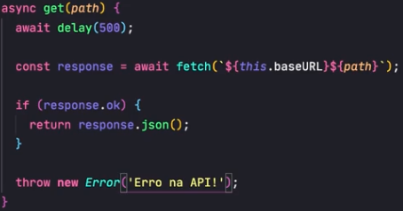Ou então podemos colocar as próprias informações retornadas da API, ex:
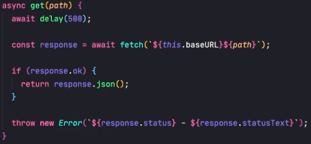Porém muitas vezes a nossa própria API mesmo a requisição não sendo do status OK, irá retornar um JSON, provavelmente contendo a mensagem de error, para que nosso console possa identifica-la e até mesmo muitas vezes exibir essa mensagem para o próprio usuário da aplicação. Para isso, podemos refinar melhor nosso método de realizar o Parse. Fazemos isso através do ContentType. Primeiro conferimos se o contentype da response é igual a appplicaiton/json. Sendo, podemos realizar o parse, dessa forma iremos evitar que o JS dispare um error de tentar parsear algo que não seja um json.
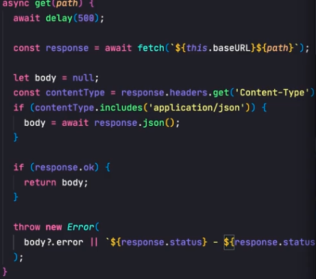Temos como padrão e regra (esLint) que tudo ou qualquer coisa que for utilizada dentro de um useEffect seja função, variavel, state, qualquer coisa deve ser armazenada dentro de seu array de dependencias. Por exemplo: Temos um useEffect que altera duas states.
useEffect(()=>{setStateA(A) , setStateB(B)} , [])
"Obrigatóriamente" dentro do array de dependencias precisamos ter esses dois states monitorados. [stateA,stateB]. A partir dessa afirmação, precisamos saber que por exemplo: Imagine que tenhamos um useEffect e que dentro dele realizemos uma função assíncrona de loadUsers, que básicamente ao abrir a página, irá realizar uma requisição a API, para buscar todos os usuários e atribuilo a um state. Provavelmente essa função será criada fora dele, pois provavelmente iremos reutiliza-la em algum outro lugar. Logo, de acordo com a regra vista acima, se torna "obrigatório" o monitoramento dessa funcao dentro do array de dependencia. Ex:
useEffect(() => {loadUsers()},[])
Como vimos, a funcao loadUsers por estar sendo utilizada dentro do useEffect precisará ser monitorada dentro do array de dependencias. Porém isso irá gerar algo muito comum ao trabalharmos com react/Effects, que é o looping infinito dessa requisicao do effect. Pois entenda o ciclo: O componente é montado -> O Effect é disparado e é buscado a lista -> Alteramos o state com a nova Lista -> Como a lista (ou qualquer state) foi alterada , o Componente é renderizado novamente, logo -> o Effect é ativado Novamente, e assim ficamos dentro de um ciclo 'sem fim'. Para corrigir esse bug, precisamos utilizar de alguns hooks fornecidos pelo próprio react, que é o useCallback & useMemo.
De início podemos começar entendendo as diferenças entre eles: Basciamente precisamos saber que o USECALLBACK irá memorizar a função por completa a ser executada e já o USEMEMO irá executar a função e guardar apenas o retorno da função. Inclusive, se dentro do USEMEMO colocarmos como retorno uma função, ele funcionará exatamente igual ao USECALLBACK.
Em resumo: Para memorizarmos FUNCOES -> useCallback
Para memorizarmos variaveis, states, info, dados -> useMemo
Em muitas ocasiões iremos nos deparar com a necessecidade de exibir Toasts na tela do usuário. Por exemplo, quando estamos nos cadastrando em um site, ou adicionando algo, fica de bom grado a aplicação enviar um Feedback para o cliente informando que a ação foi bem sucessedida ou não. Uma das melhores formas de enviar esse feedback é através de Toasts. São aquelas mensagens que aparecem na tela e em poucos segundos deseparecem. A ideia principal, é de criar um componente Toast dentro do layout da página, para que de qualquer lugar seja possível chamarmos uma função que ativa esse Toast e ele seja renderizado em uma posição fixa em qualquer lugar da nossa aplicação. (Essa é uma abordagem). Claro que dependendo do projeto, precisaremos de cada página ter um toast em um local diferente, mas se for possível centralizar tudo em um só arquivo e assim apeans chamarmos essa função (showToast) por exemplo, mais fácil. No exemplo abaixo está o container posicionado no center, sempre por cima de todos os lugares e componentes que existirem.
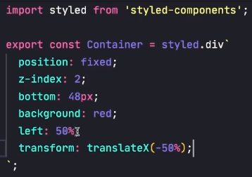Tendo nosso componente previamente criado, precisamos agora começar a implementar sua lógica. Dentro desse componente, podemos criar outro componente, que irá conter a mensagem, e as estilizacoes a serem renderizadas como sua cor, etc. Exemplo clicando no capitulo de Styled Var. Agora precisamos entender como iremos conseguir disparar as funcoes de exibição dentro de todo o nosso aplicativo. Temos a 1Opcao que consistem em utilizarmos a ContextAPI, onde colocaremos o o estado e a função de alterar o estado. Porém também temos a segunda opção que é trablhar utilizando os Event Emiters. O que são? Event Emiters possui dois pialres. Events e Listenners. Dois pilares já conhecidos quando estamos lá no início em javascript, por ex: document.addEventListenner('Click'). Ou seja, basicamente o javascript pode nos emitir eventos de diversas formas , click, scroll, resize, focus, bluur, mouseIn/Out, enfim diversos eventos. Em resumo: O listenner é uma função registrada a um evento, e sempre que o gatilho for apertado, o evento será ativado. Para trablharmos com ele, o próprio javascript já nos oferece uma api para trablharmos, chamado de CustomEvent(). O fluxo basicamente é primeiro emitimos um evento addToast, e lá dentro do componente, teremos um listenner, que ao perceber que foi ativado, tratará as alterações.
Criando o Custom Event: primeiro passo criamos uma instancia, que recebe dois parametros, o primeiro é o nome do evento, sendo sempre uma string. (CaseSensitive). Como segundo parâmetro temos um objeto opcional, na qual dentro dele, poderemos passar uma propriedade chamada Detail, onde colocaremos informacoes relevantes, que no caso do nosso componente Toast enviaremos o tipo e a mensagem .
Criando nosso Event:
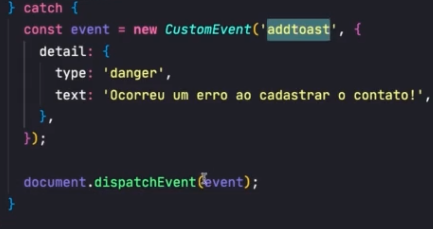Criando nosso Listenner:
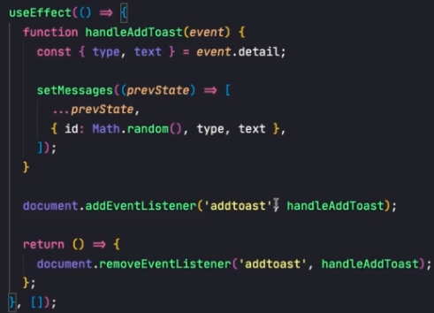E qual a lógica por trás de mostrar ? Dentro do componentes que formos exibir, criamos uma lista de Toasts, e renderizamos essa lista. A cada vez que quisermos adicionar um toast, chamamos a funcao acima, passando o type e a mensagem, e a adicionamos na lista usando rest operator. (...list.blabla). E para excluir a mensagem de Toast, basicamente o usuário pode clicar no toast, através de um onClick, na qual aplicamos um filter, e removemos o toast em questão, ou então podemos remover um toast depois de cinco segundos que ele for renderizado por exemplo. De preferencia devemos implementar as duas regras. Para implementar a segunda, precisamos entender primeiro a lógica, que é: Precisamos saber a hora em que o Toast foi mostrado, para em seguida contarmos X segundos, e assim removermos ele da lista com o mesmo método anterior. Esse timer pode ser disparado por exemplo dentro da funcao na qual ele é adicionado. Logo, 5 segundos depois, ativar a funcao de remocao.
Nesse mesmo tópico, um outro mini fator quando falamos em acessibilidade é que no caso acima, construimos nossos Toasts em tags DIVS. Dessa maneira, quando alguem com necessidades especiais for utilizar, não irá conseguir interagir com a aplicação. Pra isso, podemos "forcar" o browser a ver, da seguinte forma:
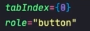Desas forma ele estará funcionando de forma 100%, porém temos algumas questões a ser levantadas. A primeira é que pode acotnecer que em alguns browsers ou disopsitivos mobile mais antigos ele não possua suporte aos eventos do JS. Porém confesso que no mundo atual isso será praticametne impossível de acontecer. Outro fator relevante que esse sim poderá nos levar a uma outra tomada de decisão, é que do jeito atual, nossos eventos estão ligados ao document, e isso gera um tráfego enorme de informacoes desnecessárias, que no caso só precisamos utilizar nossas próprias informacoes pequenas. Para isso temos a outra solução que é de criar nossos próprios EventListenners personalizados, sem que estejam vinculados ao document, dom , etc.
Aqui começamos a falar um pouco a respeito de Patterns. Patterns nada mais é do que uma forma de arquitetar o código, sempre com o intuito de deixar nossa aplicação mais fácil de ser manuseada, receber alterações, correções etc. Em resumo, é uma forma de termos um código melhor estruturado. Como todo mundo busca isso, existem determinados padrões que possuem nomenclatura e são amplamente conhecidos, como por exemplo os DattaMappers. Traduzindo ao portugues, seria algo em torno de padrão de mapeamento de dados. Basicamente ele serve para transferir dados de forma bidirecional entre as camadas de persistência e a camada de domínio. O objetivo é manter os dados do domínio e da persistência independentes um do outro. Domínio é a nossa aplicação independente de qual seja. Se estamos desenvolvendo um fornt end, nosso domínio é o front, se for um back, o back. Já a persistência é onde nossos dados estarão sendo armazenados, como por exemplo localStorage, cookies, Api, etc.
Dito isto, DataMappers é uma camada, que trata a transação de dados entre essas duas camadas. Os dataMappers ficam sempre do lado do domínio, ou seja, na nossa aplicação. Dito tudo isso, podemos concluir então que toda a informação que entra e sai da nossa aplicação passará pelo DataMapper para que ele organize tudo.
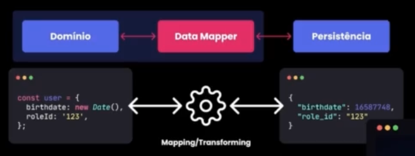Começando a colocar a mão no código, como iremos implementar esta camada? Uma boa prática, é criar uma pasta Mapper, e dentro dela um arquivo para cada entidade que iremos querer "Mapear". Dentro desse arquivo, ele precisará ter basicamente duas funções principais, (Afinal, é do dominio para a persistencia e da persistencia para o domínio. ) inclusive podemos nomear esses métodos assim: toPersistence() & toDomain(). Basicamente eles são extremamentes simples, pois eles recebem um objeto e retornam outro objeto. É para isso que eles servem.
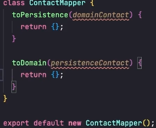Para darmos início aos entendimentos dessa Pattern, precisamos deixar claro que todo componente possui basicamente duas camadas. A camada de lógica (Estados, filtros, funcoes, eventos... ) e a camada de Interface( Ui, JSX, O que vai ser mostrado). Tendo em vista isso, provavelmente no mundo real voce irá se deparar com componentes extremamentes grandes e complexos, no qual se essas duas camadas estiverem junto e misturado, provavelmente a legibilidade será extremamente difícil.
Assim como subentendido, entra o ContainerPresentational Pattern para resolver esse "problema", que seria basicamente separar cada camada em seu quadrado. Dessa forma, teremos dois componentes um com a lógica e outro com a Interface. Assim tornando a manutenção e os testes muito mais fáceis para o time de devs. Hoje em dia com os ReactHooks essa Pattern já não é tão mais utilizado no dia a dia, porém é importante saber de sua existente para possíveis códigos mais antigos, ou para quando os próprios hooks não suprirem.
Porém como citado acima, essa não é a forma mais atual de conseguirmos separar a camada da interface da lógica. Logo, faremos isso através dos React Hooks. Para isso a lógica funcionaria da seguinte forma: Criamos um custom hook que cria todas as funcoes,states,etc, e retorna tudo para quem utilia ele. A primeira coisa que precisamos pensar, é o nome do hook. Podemos chamar de useContainer, useController, são boas ideias, porém, uma boa tática e sugestão é chamarmos do mesmo nome da page. Por exemplo, na página EditContact, podemos chamar o hook de useEditContact por exemplo. A segunda coisa que podemos pensar, é onde colocar esse hook, e por padrão podemos coloca-lo dentro da pasta de cada página. O terceiro ponto as penasr, é que basicamente precisamos criar um export default funciton useEditContact(){} e nela colocar todo nosso código que iremos usar e em seguida exportar tudo que for necessário para compor a página.
Quando falamos em animacoes no react podemos faze-las com framworks/bibliotecas ou então na mão via CSS puro. Claro que com libs/fram sempre será um jeito mais prático/padronizado para realizar tal tarefa. Porém, a pior coisa para um dev é ficar refem de uma lib, e outra, muitas vezes precisaremos fazer pequenas animações pontuais em nossa aplicação, logo, precisamos colocar na balança até que ponto vale instalar mais coisas em nosso projeto para realizar pequenas tarefas. E vale ressaltar que libs/frameworks não são ruins, apenas precisamos saber quando realmente é necessário utiliza-los. Dito isto, exemplos abaixo de pequenas animações feitas com StyledComponents/CSS Puro:
Entrada e modal/ componente com efeito:
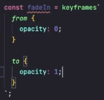Efeito do Container Crescendo/Aumentando Escala dentro da Div:
Efeito do Toast entrando e subindo de baixo pra cima:
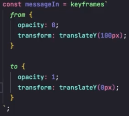Quando falamos em animações de Saída o assunto fica um pouco mais complexo pois pela lógica qunado clicamos para fechar um modal por exemplo, GERALMENTE a lógica será de setar um state para "visibleFalse" e automáticamente ele será desmontado. Logo, se ele estará desmontado, não temos como aplicar nada encima dele. Para realizar esses feitos de saída precisamos aplicar um "delay" para de fato remover esses elementos da dom.Ao clicar em cancelar por exemplo, precisamos rodar nossas animações para somente depois fechar o componente em questão, que no caso do exemplo, o modal. Em resumo, precisamos esperar a animação acabar para fechar. E o próprio JS já nos fornece uma ferramenta que nos auxiliará para saber exatamente quando ela irá fechar.
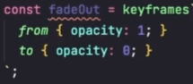